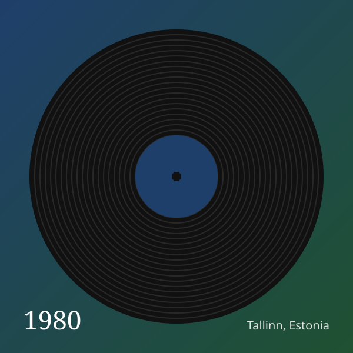

The band whose tapes the radio destroyed
An Estonian punk band played half-time at a football match and got Soviet punk banned.

- who
- Propeller (Peeter Volkonski and band)
- what
- 1980 recordings, issued as Propeller (Fugata, 1995)
- when
- 1980
- where
- Tallinn, Estonia
On 22 September 1980, the Estonian punk-art band Propeller played at half-time of a football match between Estonian Radio and Estonian TV staff at Kadriorg Stadium. Alarmed by the crowd, officials cancelled the second set. A riot followed and unrest spread through Tallinn. Forty intellectuals then wrote their famous open letter of protest.
The band was made to disband, singer Peeter Volkonski was banned from the stage, and Estonian Radio destroyed its Propeller recordings. But the band had kept its own copies, and in 1995 the 1980 tapes came out as their only album.